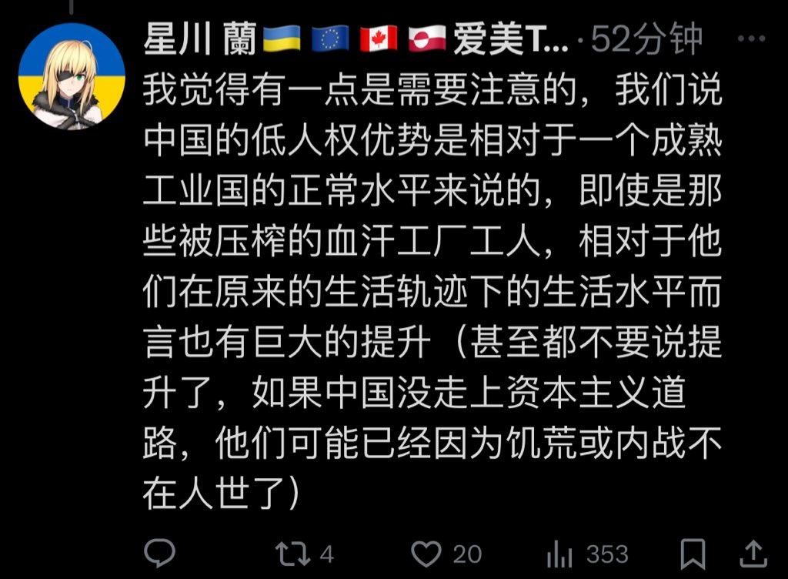

把人家的相對比較硬扯成什麼「沒有美國，中國人要餓死一大片」，蔥娘還是一如既往的愛玩Whataboutism😁
而且人家的比較也有現實證據可依——中國的迫真改開到入世，在那之前中國人整體的一個生活環境有多爛，我覺得恁可以看看跟你一樣同為建制派的張維為同志是怎麼說的😁

而且人家的比較也有現實證據可依——中國的迫真改開到入世，在那之前中國人整體的一個生活環境有多爛，我覺得恁可以看看跟你一樣同為建制派的張維為同志是怎麼說的😁

喜欢意淫不存在的事情，然后拿假设当做“幸好没有发生的事实”，最后得出结论：没老布什克林顿，中国人已经全死在“必然爆发的内战和饥荒”里面了。🤣
白宫的公仆大手一挥，大洋彼岸的人民便起死回生😭✋🏻🤚🏻。
“臭粉区，这就是名为文明同自由的魔法，受死吧😼” https://t.co/xdDLgPKEpN https://t.co/qV2iLI4oTZ
白宫的公仆大手一挥，大洋彼岸的人民便起死回生😭✋🏻🤚🏻。
“臭粉区，这就是名为文明同自由的魔法，受死吧😼” https://t.co/xdDLgPKEpN https://t.co/qV2iLI4oTZ